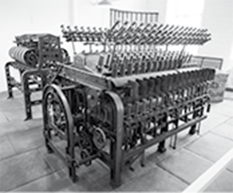
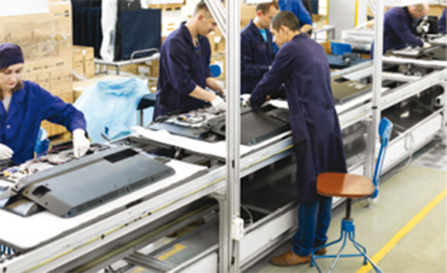
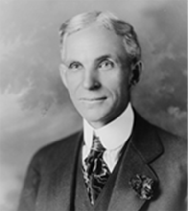
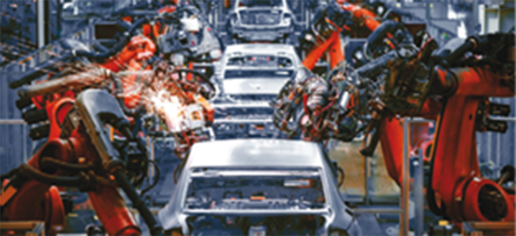

Refinaria de petróleo e gás, que fornece combustíveis e matérias-primas muito importantes para a economia e a sociedade atuais.
manine99/Shutterstock.com
A indústria é parte fundamental na economia mundial da atualidade. A maior parte dos bens que consumimos e utilizamos no dia a dia é produzida em indústrias, desde uma simples caneta até o automóvel ou os componentes utilizados para construir edifícios; desde um ônibus até grandes turbinas de hidrelétricas utilizadas na geração de energia elétrica.
Mesmo atividades aparentemente sem relação alguma com a indústria, como assistir a um filme no cinema ou ir a um show da banda pop do momento, estão totalmente interligadas aos processos de produção industrial; afinal, os objetos, as máquinas e os equipamentos utilizados para produzir o filme ou para a realização do show são fabricados pela indústria.
Nossas ações cotidianas também se relacionam de diferentes formas com a industrialização. Um exemplo importante é a forma como o trabalho é organizado atualmente, não apenas o trabalho na fábrica, mas nas fazendas, nas escolas, nos hospitais e, como mencionado, no cinema e na música. A divisão de tarefas, a busca pela produtividade e a utilização de grandes equipes e investimentos nos permitem falar da existência de indústrias musical e cinematográfica ou, ainda, uma indústria cultural.
A presença direta ou indireta da indústria em nossa vida nos permite definir a própria sociedade como uma sociedade industrial, cujo marco de origem foi a Primeira Revolução Industrial, e que vem, porém, passando por mudanças que provocam polêmicas e levantam dúvidas sobre seu futuro.
De que forma a ausência de indústrias afetaria os processos de produção de bens e serviços que consumimos e utilizamos no cotidiano?
As tecnologias empregadas na indústria vêm mudando ao longo do tempo, assim como as formas de organização, os chamados modelos de produção industrial. Você sabe o que são esses modelos? Saberia indicar o nome de algum?
Neste capítulo serão abordadas as habilidades
EM13CHS201,
EM13CHS306,
EM13CHS401,
EM13CHS404.
Sistema industrial
A palavra “indústria” é usada para identificar uma forma de organização da produção de bens que se desenvolveu de maneira mais clara e evidente a partir do final do século XVIII, na Inglaterra, chegando, no século seguinte, a outros países europeus, aos Estados Unidos e ao Japão.
Como vimos no capítulo anterior, a novidade que marcou o surgimento das indústrias foi o uso de máquinas automotrizes, inicialmente movidas com o calor oriundo da queima de carvão mineral e, posteriormente, com os derivados do petróleo e com a energia elétrica. O resultado mais imediato dessas inovações foi um enorme aumento da produtividade do trabalho humano. As mudanças promovidas pela indústria foram profundas e trouxeram inúmeras consequências para a vida no planeta, de modo que esse conjunto de mudanças configurou uma verdadeira revolução, a Revolução Industrial, a qual originou uma organização social também particular, conhecida como sociedade industrial.

Máquina a vapor para fiação de algodão de uma antiga indústria inglesa.
loocmill/Shutterstock.com
Apesar de as indústrias representarem apenas uma parte da economia no mundo atual, a manutenção do termo sociedade industrial justifica--se pelo fato de que os outros setores da economia estão fortemente ligados ao processo de industrialização, seja dependendo dele, seja como garantia para o avanço industrial.
O setor primário, composto do extrativismo mineral e vegetal e da agropecuária, é responsável por fornecer matérias-primas para as fábricas, além de depender de máquinas e outras tecnologias produzidas pelas indústrias. O setor terciário, centrado no comércio e nos serviços, vende produtos industriais ou os utiliza para manter suas atividades diárias.
Isso nos lembra de algo importante sobre a industrialização: as indústrias não podem existir de forma isolada, o que significa que sua expansão dependeu da criação de condições econômicas, políticas, tecnológicas e espaciais. Por causa disso, dividimos a industrialização nos seguintes tipos:
Clássica: ocorreu em países que passaram por processos de transformação de seus sistemas políticos, por meio de movimentos que derrubaram governos absolutistas ou autoritários. Além disso, tais paí-ses foram pioneiros na industrialização. Inglaterra, França e Estados Unidos se enquadram nesse grupo.
Via prussiana: caracterizava países – Japão e Alemanha – que mantiveram governos centralizadores, mas se aliavam à burguesia nacional que se formava.
Planificada: característica da União das Repúblicas Socialistas Soviéticas (URSS), com o Estado sendo proprietário dos meios de produção e decidindo como o lucro de suas empresas seria utilizado.
Periférica: definida com a instalação de indústrias em países não industrializados, foi uma das consequências da globalização. Tais empresas, em grande parte, eram multinacionais com sede nos paí-ses centrais, que faziam acordos com os países periféricos para obterem vantagens na instalação de suas fábricas, como isenção de impostos.
Com base nesse cenário, analisaremos a seguir a interdependência entre diferentes tipos de indústria e a necessidade de infraestrutura para o seu funcionamento.
Tipos de indústria
Um sistema industrial é formado por diversos tipos de indústrias interdependentes, e há diferentes critérios para classificar as indústrias e separá-las em tipos. Vejamos alguns exemplos.
De acordo com a tecnologia empregada, as indústrias podem ser tradicionais ou dinâmicas. As primeiras utilizam tecnologias mais antigas e não apresentam processos de inovação. As indústrias dinâmicas, por sua vez, apresentam processos de inovação, tanto tecnológica como organizacional.
Conforme a função, as indústrias podem ser germinativas ou de ponta. As primeiras são aquelas que tendem a gerar várias outras indústrias para compor sua cadeia produtiva. Indústrias automobilísticas tendem a estimular a criação, em seu entorno, de fábricas de autopeças, por exemplo. As indústrias de ponta são aquelas que se especializam em áreas de intensa inovação tecnológica.
De acordo com os recursos, as indústrias podem ser classificadas em: mão de obra intensiva ou capital-intensiva. As primeiras são aquelas que precisam de muita mão de obra em relação ao total dos lucros ou dos investimentos realizados. As indústrias capital-intensivas são as que precisam de grande quantidade de capital investido, ou seja, muito dinheiro para funcionar.
Ainda no contexto dessa classificação, baseada nos recursos empregados, existe, embora com menos frequência, a utilização do termo indústria energointensiva. Nesse caso, trata-se das indústrias que utilizam muita energia para seu funcionamento.
Entre todas as classificações de tipos de indústrias, a que mais nos deparamos no dia a dia é aquela baseada no tipo de bem produzido em cada setor da indústria. Esse critério é também o que deixa mais clara a interdependência dos diferentes tipos de indústria dentro de um sistema industrial.
Desse ponto de vista, os setores industriais podem ser divididos, a princípio, em indústrias de bens de produção e de bens de consumo. As primeiras são aquelas voltadas para a produção de bens para outras indústrias, enquanto as últimas têm sua produção focada no consumidor final.
As indústrias de bens de produção costumam ser chamadas de indústrias pesadas ou de base e podem ser subdivididas em três tipos: as de mineração, as de bens intermediários e as de bens de capital.
As indústrias mineradoras são aquelas voltadas à extração de minérios em escala industrial, utilizando grandes máquinas e pesada infraestrutura. As de bens intermediários são aquelas que transformam matérias-primas naturais em bens que serão utilizados como matérias-primas industriais; por exemplo, as siderúrgicas e metalúrgicas, em geral, utilizam minério (recurso natural) para produzir ligas metálicas usadas em indústrias automobilísticas, de eletrodomésticos, de eletrônicos e tantas outras. As de bens de capital são aquelas que produzem máquinas e equipamentos industriais, como as fábricas de prensas, de tornos, de fornos industrias, caldeiras etc.
As indústrias de bens de consumo, também chamadas de indústrias leves, podem ser subdivididas em três tipos: as de bens de consumo duráveis, as de bens semiduráveis e as de bens não duráveis. A diferença entre esses três tipos está ligada ao ciclo de vida de cada produto. Os bens duráveis são aqueles que podem se manter úteis por vários anos, como automóveis e eletrodomésticos; os bens não duráveis são aqueles de consumo imediato e de esgotamento constante, como os produtos de limpeza, higiene pessoal e alimentos; por fim, os bens semiduráveis são aqueles cujo ciclo é médio, como roupas e calçados, que podem durar de poucos meses a alguns anos. Veja o esquema a seguir.
1968/Shutterstock.com
industryviews/Shutterstock.com
Apesar de todas as indústrias serem importantes, é interessante destacar que existem diferenças entre elas no que diz respeito à capacidade de geração de riqueza e de proporcionar desenvolvimento socioeconômico aos países. As indústrias com grande potencial para agregar valor aos bens produzidos geram mais riqueza.
Valor agregado pode ser entendido como a riqueza incorporada aos bens em cada uma das fases da cadeia produtiva, desde a extração de matéria-prima até a finalização do produto. Bens que são comercializados de um modo próximo à condição de matéria-prima natural (não processados ou semiprocessados) são os de menor valor agregado e recebem a denominação de commodity. Por outro lado, quanto mais a matéria for trabalhada (processada) e quanto mais complexo e tecnologicamente elaborado for o processo de produção do produto, maior será o valor agregado desse bem.
Indústria e infraestrutura
Quando o assunto é indústria, o termo infraestrutura costuma se referir, principalmente, a dois tipos de sistemas: o de geração de energia e o de transportes.
O sistema energético, que envolve a produção e a distribuição de diferentes formas de energia, garante o funcionamento das indústrias e a manutenção de sua produtividade.
Em sociedades industrializadas ou em industrialização, a produção e a distribuição de energia são condições estratégicas, que, inclusive, orientam políticas e planos de desenvolvimento específicos por parte de governos nacionais para garantir o fornecimento de energia.
Já o sistema de transporte é fundamental para interligar as indústrias no espaço geográfico, formando uma rede que integra os objetos e viabiliza os fluxos na sociedade industrial, interligando as fábricas tanto às áreas produtoras de matérias-primas quanto às áreas consumidoras dos bens industrializados.
Linha ferroviária em área industrial.
Miks Mihails Ignats/Shutterstock.com
A disponibilidade e a qualidade do transporte em um país ou região podem ser um dos principais estímulos ou impedimentos para que as indústrias se instalem ou mesmo se desenvolvam. Também por esse motivo é comum que governos criem políticas públicas para garantir o desenvolvimento dos sistemas de transporte e, dessa forma, atrair indústrias e capital para seus territórios.
A industrialização pode ser estudada de diferentes maneiras, em sua dimensão econômica, política ou cultural. Essas perspectivas também são estudadas pela Geografia, pois acabam influenciando e sendo influenciadas pelo processo de produção do espaço. No entanto, um foco muito importante para os geógrafos, quando o assunto é industrialização, fica a cargo do debate sobre a infraestrutura, uma vez que se trata de uma análise direta das condições espaciais para que uma planta industrial se instale em uma determinada localidade. Tais condições espaciais podem ter relação com aspectos naturais, como disponibilidade de reservas de matérias-primas, recursos energéticos, entre outros. Porém, as transformações realizadas no meio, ou seja, a produção de um espaço geográfico que garanta a possibilidade de desenvolvimento e lucro é que tem mais chance de determinar a instalação ou não de uma indústria.
Revoluções industriais e modelos de produção
Como vimos anteriormente, as indústrias podem ser classificadas, entre outros critérios, em relação à tecnologia, podendo, nesse caso, se enquadrar entre as indústrias tradicionais ou as dinâmicas. No geral, estar no segundo grupo significa ser mais inovadora do que as que estão no primeiro. Mas, afinal, de que forma vêm se dando os processos de inovação nas indústrias?
Duas discussões costumam tratar da inovação industrial: uma delas se refere às revoluções industriais e a outra, aos modelos de produção. Revoluções e modelos de produção não são independentes, mas podemos tratá-los de forma separada, como faremos a seguir. Primeiro, vamos descrever e entender os processos de Revolução Industrial; depois, os modelos de organização da produção.
Revoluções industriais
A Primeira Revolução Industrial teve início por volta de 1750. Esse movimento foi marcado pelo invento da máquina a vapor e esteve concentrado na Inglaterra. O principal tipo de indústria da época era a têxtil.
A Segunda Revolução Industrial teve início por volta de 1850. Em termos tecnológicos, foi caracterizada pelo desenvolvimento de motores à explosão interna, movidos a petróleo e pelo largo uso da energia elétrica, o que favoreceu o desenvolvimento de indústrias químicas e automobilísticas, além das siderúrgicas. Diferentemente da Primeira Revolução Industrial, a segunda se expandiu para outros países da Europa, além de Estados Unidos e Japão.
A Terceira Revolução Industrial se desenrolou, principalmente, após a década de 1950 e esteve diretamente ligada à Revolução Técnico-Científica-Informacional, da qual tratamos no capítulo anterior. Suas principais inovações tecnológicas estiveram relacionadas à eletrônica e informática e, mais recentemente, à robótica e biotecnologia.
Atualmente vem se falando de uma Quarta Revolução Industrial. Klaus Schwab, fundador e presidente do Fórum Econômico Mundial, é um dos defensores da tese de que já estaríamos passando por uma grande transformação que resultaria no que também vem sendo chamado de indústria 4.0. Entre as novidades, destacam-se:
• Internet das coisas: identificada pela sigla em inglês IoT (Internet of Things), refere-se à interligação de objetos com sensores via internet. Esses objetos são os smartphones, computadores, eletrodomésticos, automóveis, equipamentos hospitalares, máquinas industriais, entre outros.
MAIS
A Internet das coisas, Canal NIC.br
No vídeo, há uma explicação sobre a evolução da própria internet, desde sua criação até a possibilidade de integrar objetos e pessoas, tornando-se o que ficou conhecido como internet das coisas.
Disponível em: http://p.p4ed.com/HOGAL.
Internet das Coisas | Expresso Futuro com Ronaldo Lemos. Canal Futura
Nesse episódio do programa Expresso Futuro, do canal Futura, o advogado e professor Ronaldo Lemos entrevista especialistas brasileiros e estrangeiros para refletir sobre as possibilidades e os desafios da internet das coisas.
Disponível em: http://p.p4ed.com/JAJDI.
Big data: os usuários de smartphones e outros dispositivos ligados à internet geram, atualmente, uma enorme quantidade de dados diários sobre os mais diversos assuntos, muitas vezes sem sequer perceber que o estão fazendo. Uma simples curtida em uma foto ou uma busca na internet gera informações. A possibilidade de processar e organizar estas e outras informações pode gerar novas formas de produzir e organizar as indústrias, a economia e a sociedade como um todo.
Inteligência artificial: os processos de machinelearning, ou seja, o desenvolvimento de máquinas e aplicativos com capacidade de aprender a partir dos dados fornecidos pelo usuário ou por sensores, tendem a tornar a inteligência artificial uma realidade em breve. Processos produtivos podem ser radicalmente modificados com uso dessas tecnologias.
Biotecnologia: o domínio do conhecimento genético tende a gerar possibilidades muito inovadoras nas indústrias de alimentos, farmacêuticas, de cosméticos, de produtos de limpeza e muitas outras. Os alimentos transgênicos, por exemplo, são oriundos dos desenvolvimentos da Biotecnologia.
Nanotecnologia: a possiblidade de produzir objetos cada vez menores, chegando a dimensões não mais visíveis a olho nu, é outra promessa para o desenvolvimento de vários setores industriais.
Novos materiais: materiais naturais ou produzidos artificialmente, como minerais raros, polímeros e cerâmicas, prometem diminuir o peso, aumentar a resistência e multiplicar a condutibilidade elétrica de objetos produzidos pela indústria, criando possibilidades de aplicação em vários setores.
Sistemas de armazenamento de energia: com o aumento do uso de dispositivos móveis e com a expectativa da criação de veículos elétricos, torna-se cada vez mais importante o desenvolvimento de baterias e outras tecnologias capazes de armazenar cada vez mais energia e por mais tempo.
Síntese das principais mudanças que marcaram as revoluções industriais.
Modelos de produção
A inovação industrial costuma ser mais visível na forma de novas tecnologias e novos produtos, mas as mudanças organizacionais, independentemente de avanços tecnológicos, também constituem uma importante estratégia para garantir os objetivos da produção industrial, com destaque para o sempre buscado aumento da produtividade.
Foi a partir da segunda metade do século XIX, início da Segunda Revolução Industrial, que a busca intencional por mudanças organizacionais da produção começou a ganhar mais destaque.
Taylorismo
No contexto de desenvolvimento da ciência, estudiosos começaram a propor a criação de uma administração científica do processo de trabalho. Frederick Taylor (1856-1915), um engenheiro estadunidense, cujas ideias foram sintetizadas em um livro de 1911 chamado Princípios da administração científica, foi um nome importante nesse sentido.
Segundo as ideias de Taylor, a organização do processo produtivo tinha que seguir métodos científicos, buscando o aumento de produtividade independentemente do nível tecnológico de cada fábrica. Seu modelo ficou conhecido como taylorismo e tinha como principais propostas:
a separação entre o planejamento (feito pela gerência) e a execução (a cargo dos operários);
a medição do tempo de produção a cada mudança, de forma a avaliar sua eficácia;
a especialização do trabalhador em tarefas simples e repetitivas para aumentar a velocidade e a precisão das ações;
o controle sobre os trabalhadores para evitar a “vadiagem”, que segundo ele era um problema para a produção;
o aumento de salários como recompensa pelo crescimento de produtividade.
O objetivo de Taylor era, fundamentalmente, aumentar a produtividade e diminuir as perdas, principalmente de tempo, o que é muito coerente com o padrão do capitalismo industrial. Assim sendo, mesmo que posteriormente tenham surgido, como veremos a seguir, outros modelos, esses objetivos continuaram sendo perseguidos por aqueles que procuraram racionalizar a produção.
Benz Patent-Motorwagen, primeiro carro a gasolina patenteado, em exposição em Dresden, Alemanha, em 2015.
Dmitry Eagle Orlov/Shutterstock.com
Fordismo
O automóvel moderno, movido à gasolina, foi inventado e patentea-do em 1886, na Alemanha, por Carl Benz (1844-1929), mas por muitos anos manteve-se como um bem de luxo, de acesso exclusivo a pessoas de alto poder aquisitivo. Essa situa-ção começou a mudar a partir de 1913, com a criação da linha de montagem na Ford Motor Company, empresa criada pelo norte-americano Henry Ford.
Esse novo modelo utilizava a divisão do trabalho em tarefas simples e repetitivas, como propunha Taylor, mas os trabalhadores agora eram posicionados em linhas, muitas vezes em frente a esteiras rolantes que transportavam as peças a serem montadas de um trabalhador para o outro. O trabalho de produção passou a ser planejado de forma que a ação de um trabalhador complementava a ação daquele que estava ao seu lado.

Linha de montagem de televisores em Minsk, capital de Belarus, em 2018.
TRAIMAK/Shutterstock.com
Outra novidade implementada por Ford foi a padronização dos produtos, também chamada de estandardização. Em vez da fabricação de diferentes modelos e acabamentos (cores, tipos de bancos, rodas e outros detalhes), a empresa passava a focar sua produção de forma quase total em apenas um modelo, sempre com o mesmo acabamento: o Ford T preto.
Ford T preto, desenvolvido em 1915, fotografado em estrada próxima à cidade de Birdwood, na Austrália, em 2016.
Ryan Fletcher/Shutterstock.com

Henry Ford, em retrato de 1919.
Hartsook/Library of Congress
Mas Ford não se preocupava apenas com a produção, seu foco também era expandir fortemente as vendas. Hoje, essa observação talvez pareça evidente, porque o objetivo principal dos que produzem mercadorias é vendê-las. No entanto, a novidade no fordismo foi justamente passar a tomar medidas para garantir a alta expansão das vendas, o que resultou no surgimento de uma sociedade de consumo em massa.
A primeira providência para aumentar as vendas foi a própria queda do preço dos produtos, garantida pela produção em massa. Além disso, Ford também implantou aumentos salariais aos seus funcionários, o que aumentava a capacidade de consumo dos trabalhadores, uso da publicidade e venda a crédito.
Toyotismo
Por mais que tenha representado uma grande transformação na indústria, na economia e na sociedade, o fordismo, como qualquer outro modelo, também apresentava limites, os quais foram levantados, principalmente, por engenheiros japoneses, que procuravam replicar o modelo em seu país no final dos anos 1950, mas que acabaram criando um novo modelo de produção, conhecido como toyotismo ou pós-fordismo.
Entre os limites para implementar o fordismo no Japão, tais engenheiros destacaram três: a escassez de grandes áreas para estocagem de peças e de carros acabados; o limitado mercado consumidor interno do país; a tendência ao desperdício de matéria-prima e energia. Para lidar com tais limites, as principais propostas foram:
a redução dos estoques através do método de produção just in time, também conhecido como produção “de fluxo contínuo”. Tal método busca ajustar a quantidade produzida à programação de vendas, de modo que os produtos sejam terminados o mais próximo possível do momento de serem enviados para seus compradores.
a flexibilização da linha de montagem, que significava criar um processo produtivo que pudesse ser adaptado de forma relativamente rápida e fácil para passar a produzir outra mercadoria. Por exemplo, que pudesse passar da produção de carros para a de pequenos caminhões, e destes para motos. Com isso, passava a ser possível atender a nichos de mercado, ou seja, a grupos menores de consumidores para cada produto.
inclusão da ideia de qualidade total ao processo produtivo, que é uma prática de trabalho que consiste em procurar evitar erros e desperdícios em todas as etapas da produção. A palavra japonesa kaizen, que significa “melhoria contínua”, passou a ser utilizada para representar essa busca.
Em termos gerais, as práticas que compõem o toyotismo, ou a produção just in time, a flexibilização da linha de montagem e o kaizen, buscam, por diferentes caminhos, chegar a um mesmo objetivo, que é a eliminação máxima de desperdícios. Por isso, esse modelo também é conhecido como de produção enxuta ou, em inglês, lean manufacturing.
Grande mudança de paradigma: do fordismo à acumulação flexível
Os modelos de produção limitam-se, a princípio, a propor formas de organizar o trabalho no interior das fábricas, mas, como isso nunca está totalmente desconectado do que está fora delas, ou seja, de questões políticas, econômicas e culturais da sociedade como um todo, a mudança de um modelo para outro também envolve uma mudança de paradigma, que podemos definir como um padrão de pensamento ou de organização social de ordem geral.
O fordismo se desenvolveu em um contexto social específico que era caracterizado por uma tendência à estabilidade em diversos sentidos. Podemos dizer, portanto, que esse modelo de produção estava ligado ao paradigma da estabilidade, marcado, principalmente, por empregos e carreiras profissionais estáveis.
A transição para o toyotismo ocorreu em um contexto de mudanças mais amplas a ele relacionadas. No geral, as mudanças acabaram, ou pelo menos diminuíram bastante, com aquele cenário de estabilidade que caracterizava o fordismo. A estabilidade fordista foi substituída pelo paradigma da flexibilidade toyotista. Por isso, David Harvey, um importante geógrafo britânico radicado nos Estados Unidos, chamou o novo modelo de acumulação flexível, no qual podemos encontrar processos de flexibilização em relação às leis trabalhistas, ao uso de tecnologias e localização das indústrias, entre outros.
A expansão do toyotismo ocorreu concomitantemente à do neoliberalismo e da globalização. A concorrência entre indústrias se intensificou e os governos passaram a ser pressionados para facilitar as ações das empresas que buscavam alcançar maior competitividade. Entre as exigências empresariais estava a flexibilização das relações de trabalho. Novamente a ideia de aumentar a flexibilidade, mas agora com foco nos contratos entre empregadores e empregados.
Direitos antes aparentemente sólidos que garantiam bons salários e carreiras estáveis para os trabalhadores estadunidenses e europeus começaram a ser eliminados, principalmente em países nos quais o aumento do desemprego começou a enfraquecer os sindicatos, dificultando as lutas coletivas dos trabalhadores.
Em relação ao uso das tecnologias, é interessante destacar que a constante inovação passou a fazer parte dos processos produtivos, principalmente para gerar novas mercadorias ou novos modelos das existentes. A produção just in time, como vimos, é baseada na busca por ajustar a produção à demanda. Contudo, as empresas também usaram a inovação tecnológica para incentivar o aumento do consumo, por meio de uma estratégia que ganhou a denominação de obsolescência programada, ainda que as empresas não a admitam.
A obsolescência programada leva à recorrente substituição de produtos entendidos como ultrapassados por novos modelos.
robert cicchetti/Shutterstock.com
A obsolescência programada diz respeito a um processo de fazer com que os bens produzidos tornem-se obsoletos por meio de atualizações ou novos modelos que são disponibilizados com funções novas e design mais arrojado. Os computadores e smartphones são bons exemplos desse processo, assim como a moda. Nesses e em outros casos é clara uma mudança de paradigma: no passado valorizavam-se produtos duradouros; hoje, valoriza-se a possibilidade de trocar modelos antigos por novos em uma velocidade crescente.
Discussão em sala
Obsolescência programada
A obsolescência programada hoje pode ser entendida apenas como uma estratégia das empresas ou constitui um desejo de grande parte dos consumidores?
Quais são as consequências ambientais, sociais e psicológicas da intensificação desse processo?
Ainda no campo da inovação tecnológica, é importante relacionarmos a flexibilização da produção com a automação industrial, já que computadores e robôs podem ser utilizados para realizar tarefas antes feitas por trabalhadores humanos, reduzindo os custos de produção.
O resultado disso, no entanto, é o aumento do desemprego estrutural, ou seja, do número de desempregados não apenas por questões conjunturais (crises econômicas), mas de forma permanente, por causa da mudança na estrutura do processo produtivo. A chegada da Quarta Revolução Industrial tende a agravar fortemente esse problema.

Linha de produção automotiva formada por robôs.
Jenson/Shutterstock.com
Em relação à localização industrial, vale destacar a internacionalização da produção, que consiste no uso, por parte das grandes empresas transnacionais, de diversas estratégias para distribuírem seus processos produtivos, suas vendas e seus investimentos pelas localidades que ofereçam as maiores vantagens do ponto de vista do lucro.
Os primeiros estudos sobre a desindustrialização, nas décadas de 1980 e 1990, a viam como um processo positivo, afirmando que ela representava um amadurecimento econômico dos países. O principal argumento colocava que a automação industrial reduzia a quantidade de empregados nas indústrias, mas que isso era bom, porque eram criados empregos melhores no setor terciário, que seria mais dinâmico e inovador. Hoje, no entanto, o aumento do desemprego e a queda das exportações e da arrecadação de impostos em países ricos vêm destacando o lado negativo do processo. A luta contra a desindustrialização aparece, inclusive, como proposta em debates de campanhas eleitorais em alguns países.
Esse processo é considerado uma forma de flexibilização da localização industrial. A localização industrial é determinada pelos chamados fatores locacionais, que são as características do espaço que influenciam na decisão sobre onde instalar as fábricas. Entre tais características, destaca-se a disponibilidade de recursos naturais, de mercado consumidor, de mão de obra e de infraestrutura. A globalização vem mudando o peso desses fatores, permitindo que as empresas busquem os menores custos de produção e, ao mesmo tempo, mantenham suas vendas predominantemente em países ricos.
A consequência disso é a desindustrialização de países mais desenvolvidos, com destaque para os Estados Unidos, Japão e diversos países europeus. A desindustrialização pode ser percebida por meio da diminuição da participação do setor industrial na produção de riquezas (PIB) e na geração de empregos em um determinado país.
Participação na produção de riqueza por setor da economia nos Estados Unidos – 1947-2015
Fonte: BEA NIPA Accounts.
Nesse contexto, as grandes empresas com atuação internacional vêm sendo chamadas de transnacionais para dar destaque ao aumento de liberdade de localização. Tais empresas passam a funcionar como empresas-rede, ou seja, grupos empresariais que possuem uma rede de operações espalhada por diferentes países. As empresas que integram a rede podem pertencer todas a um mesmo grupo ou pertencer a diferentes grupos, que podem ser contratados pela “empresa-mãe”, a qual pode, inclusive, terceirizar completamente o processo produtivo.
Esse tipo de arranjo é comum desde a década de 1990 nos setores de roupas e calçados, quando grandes grifes dos Estados Unidos e da Europa deixaram de ter fábricas próprias e passaram a contratar empresas sediadas em países pobres para produzir tênis, camisetas, calças etc. Na última década, esse processo estendeu-se para setores de tecnologia, com a produção de smartphones, tablets e computadores.
O novo arranjo espacial da indústria tornou visível uma espécie de divisão do trabalho “intrafirma”, que consiste em um mesmo grupo empresarial ter diferentes unidades localizadas em diferentes países. Geralmente, unidades localizadas em países mais pobres têm a função de produzir mercadoria, ao passo que as unidades localizadas em países mais ricos mantêm funções de pesquisa e gestão. Configurou-se, a partir disso, uma nova DIT, que estudaremos no próximo capítulo.
Aplicando conhecimentos
1
Defina o conceito de indústria explicando sua relação com o valor agregado das mercadorias.
2
O sistema industrial é um conjunto de sistemas de ações e de sistemas de objetos que se complementam. Descreva, no contexto desse sistema, a integração entre os diferentes tipos de indústria.
3
O taylorismo é um modelo de organização da produção proposto no século XIX. Qual é sua relação com o desenvolvimento da ciência que começava a ocorrer naquele momento?
4
Indique e explique duas propostas do fordismo para aumentar a produtividade.
5
Indique duas propostas do fordismo para garantir o aumento do consumo.
6
Uerj 2018 Ao longo de dois séculos de existência, as características estruturais do sistema capitalista permanecem inalteradas. Nele, contudo, houve importantes mudanças que redefiniram as formas de produção e consumo de bens. Essa é a razão pela qual os estudiosos reconhecem momentos distintos do capitalismo, denominados como modelos produtivos. As campanhas publicitárias guardam forte coerência com esses modelos.A imagem publicitária que expressa uma característica do modelo produtivo fordista é:
br.pinterest.com
publicitart.xpg.uol.com.br
google.com
google.com
6
Aponte um problema do fordismo que a proposta de produção just in time, ou toyotismo, pretende solucionar ou amenizar.
Consolidando saberes
1
Unesp 2016 Base da formação, há 35 anos, do Polo Industrial de Camaçari, considerado o maior do gênero no Hemisfério Sul, na região metropolitana de Salvador (BA), a indústria química e petroquímica pode estar em via de extinção no local, onde seguidos fechamentos de fábricas do setor no polo ilustram a situa-ção. Apenas na última década, a Braskem – maior indústria do setor no local – fechou três de suas oito unidades. Além dela, deixaram o polo ou reduziram bastante a atividade, nos últimos cinco anos, grandes empresas internacionais, como Dow, DuPont, Air Products e Taminco, entre outras.
(www.estadao.com.br. Adaptado.)
Constituem motivos para a saída das indústrias do ramo químico e petroquímico do Polo Industrial de Camaçari:
o fim dos incentivos fiscais, os elevados gastos com segurança e o aumento dos impostos.
as frágeis redes de transporte, a dificuldade de comunicação e a falta de matérias-primas.
a queda na demanda do consumo local, a baixa qualificação da mão de obra e o sucateamento dos maquinários.
o término das concessões, a falta de manutenção das infraestruturas e o desmembramento dos terrenos.
as plantas industriais rígidas, a logística precária e os elevados custos de produção.
2
Udesc Analise as proposições sobre os tipos de indústrias.
As indústrias extrativas minerais (mineração pesada de ferro, alumínio e manganês), as refinarias de petróleo (gasolina, óleo diesel, querosene) e as siderúrgicas são exemplos de indústrias de bens de produção ou de base.
As indústrias de autopeças (peças para automóveis, caminhões e tratores) e as indústrias mecânicas (máquinas industriais, colheitadeiras e arados mecânicos) são exemplos de indústrias de bens intermediários.
As indústrias de confecções (roupas) e as indústrias de cosméticos (xampus, sabonetes e cremes dentais) são exemplos de indústrias de consumo não duráveis.
As indústrias automobilísticas (carros e motocicletas) e as indústrias de eletrodomésticos (fogões, geladeiras, aparelhos de som) são indústrias de bens de consumo duráveis.
Somente as afirmativas II e IV são verdadeiras.
Somente as afirmativas I e II são verdadeiras.
Somente as afirmativas I e III são verdadeiras.
Somente a afirmativa III é verdadeira.
Todas as afirmativas são verdadeiras.
3
UFMS A partir do estabelecimento da indústria como novo ramo de atividade econômica, níveis diferenciados de tecnologia foram empregados no processo fabril. De acordo com o nível tecnológico e a função que cada segmento fabril desempenha na economia das atuais sociedades capitalistas, a indústria pode assumir diferentes classificações. Em relação à classificação das indústrias, é correto afirmar:
01. Indústrias de tecnologia de ponta são aquelas que produzem recursos tecnológicos altamente sofisticados, resultantes da aplicação imediata das descobertas científicas no processo de produção. São exemplos de indústrias de tecnologia de ponta: as de informática, de produtos eletrônicos, a aeroespacial e as de biotecnologia.
02. Indústrias tradicionais são aquelas que primeiro se instalaram em uma região. Servem de base para outras indústrias, fornecendo-lhes matérias-primas já processadas. Utilizam equipamentos pesados e pouca mão de obra, considerando o elevado grau de automação dos equipamentos. São exemplos de indústrias tradicionais: as siderúrgicas, as cimenteiras, as metalúrgicas e as cerâmicas.
04. Indústrias de bens de produção são aquelas que produzem mercadorias para o consumo da população. Empregam muita mão de obra e pouca tecnologia e atuam em mercados altamente competitivos em nível regional. São exemplos de indústrias de bens de produção: indústrias alimentícias, indústrias moveleiras e indústrias farmacêuticas.
08. Indústrias de bens intermediários são aquelas que produzem máquinas e equipamentos que serão utilizados em outros segmentos da indústria e em diversos setores da economia. São exemplos de indústrias de bens intermediários: indústria mecânica e indústria de autopeças.
16. Indústrias de bens de consumo são aquelas que fabricam bens que são consumidos pela população em geral. Estão divididas em bens de consumo duráveis e bens de consumo não duráveis. Entre as indústrias de bens de consumo duráveis, estão: as indústrias de produção de eletrodomésticos e a indústria automobilística. Entre as indústrias de bens de consumo não duráveis, estão: as tecelagens, as de confecções, as de produtos alimentares, as de perfumaria e medicamentos.
Soma:
4
UEM-PR 2015 Sobre sistemas produtivos, envolvendo geração de matérias-primas, indústria, circulação, comércio e consumo, assinale o que for correto.
01. A Revolução Industrial corresponde à fase inicial do processo produtivo. A doutrina econômica propõe a intervenção do Estado na economia, visando atingir metas desenvolvimentistas em curto prazo.
02. Produto Interno Bruto (PIB) corresponde à soma de todos os bens econômicos e serviços produzidos por um país no decorrer de um ano. Contribuem para o cálculo do PIB a produção de matérias-primas e de alimentos, a produção industrial e os serviços prestados.
04. Os setores produtivos são classificados, de acordo com sua importância no processo econômico, em primário, secundário e terciário. Considerando a indústria como setor mais importante, a produção industrial é classificada como atividade primária.
08. Cadeia produtiva significa as etapas de um sistema de produção envolvendo o fornecimento de matérias-primas, o transporte, a industrialização, a rede de distribuição e a chegada ao consumidor final.
16. Indústria é o conjunto de atividades produtivas que transforma matérias-primas em mercadorias para o consumo ou para o uso da população.
Soma:
5
Fuvest-SP 2019
MDIC – www.mdic.gov.br. Adaptado.
Com base no gráfico referente à pauta das exportações brasileiras, é correto afirmar que, no período analisado, houve:
ampliação do setor secundário, especialmente de bens de capital intermediários.
consolidação do Brasil como exportador de alta tecnologia, cujo percentual vem se ampliando na pauta de exportações brasileiras.
fortalecimento do setor primário e declínio do setor de maior valor agregado.
maior peso do setor primário, pela primeira vez na história econômica brasileira.
diminuição da agroindústria nas exportações e aumento do peso dos bens manufaturados.
6
Uern 2015 O professor Paulo Sandroni define como indústria de ponta “a empresa ou setor industrial que realiza a montagem final de um conjunto de peças fornecidas por outras fábricas, concluindo, assim, um processo fabril que abrange várias unidades produtoras”.
(Moraes, 2011, p. 545.)
É característica da indústria de ponta:
A comunicação com fornecedores, subcontratantes e clientes é mais direta e permanente.
A organização do trabalho é coletiva e repousa na polivalência dos trabalhadores assalariados.
A competitividade, a diminuição de custos, a racionalização e a flexibilidade da produção são metas da empresa.
As diversas atividades (pesquisa, concepção da produção e comercialização) são mais integradas e articuladas no seio da empresa.
7
Unifor-CE 2014 Em torno da metade do século XIX, a economia mundial, particularmente europeia e norte-americana, passou por profundas transformações tecnológicas e organizacionais. Analise as afirmativas abaixo a respeito dessas transformações:
Multiplicaram-se as fábricas: na Inglaterra, Alemanha, Bélgica, USA, França e China.
Aumento do número de invenções e consequentemente de patentes.
Introdução da administração científica.
Principais setores: energia elétrica, química, aço, petróleo e têxtil.
Houve a concentração e a centralização do capital.
Somente estão CORRETAS as afirmativas:
I, II e III.
I, III e IV.
II, III e V.
II, IV e V.
I, II e IV.
8
Fuvest-SP 2017 O período que vai de 1956 a 1967 é considerado como a primeira fase da industrialização pesada no Brasil.
Barjas Negri. Concentração e desconcentração industrial em São Paulo –1880 -1990. Campinas: Unicamp, 1996.
Sobre as características da industrialização brasileira no período de 1956 a 1967, é correto afirmar que
houve uma associação entre investimentos no setor estatal e a entrada de capital estrangeiro, que propiciaram a instalação de plantas produtoras de bens de capital.
a instituição do Plano de Metas, que teve como principal finalidade incrementar a incipiente industrialização do Rio de Janeiro e de São Paulo, marcou politicamente esse momento do processo.
partiu do Estado Brasileiro, de caráter fortemente centralizador e nacionalista, a criação das condições para a nascente indústria têxtil que se instalava no país, por meio de diversos incentivos e isenções fiscais.
ocorreu a implantação de multinacionais do setor automobilístico, que se concentraram em São Paulo, principalmente ao longo do eixo da Estrada de Ferro Santos-Jundiaí, em direção a Ribeirão Preto.
se trata de uma fase marcada pela política de “substituição de importações”, uma vez que se deu um incremento da indústria nacional, pela abundância de mão de obra.
9
Fatec-SP 2014 Para preparar uma caixa de telefone celular com carregador de bateria, fone de ouvido e dois manuais de instrução, o empregado da fábrica dispõe de apenas seis segundos. Finalizada essa etapa, a embalagem é repassada ao funcionário seguinte da linha de montagem, o qual tem a missão de escanear o pacote em dois pontos diferentes e, em seguida, colar uma etiqueta. Em um único dia, a tarefa chega a ser repetida até 6 800 vezes pelo mesmo trabalhador.
Refletindo sobre a situação exposta no texto, é correto afirmar que essa fábrica se organiza pelo sistema de produção conhecido como
toyotismo, no qual a mecanização do trabalho leva à divisão equitativa dos lucros entre os operários.
toyotismo, no qual os trabalhadores controlam os meios de produção e produzem no seu próprio ritmo.
fordismo, no qual cada um dos trabalhadores realiza todas as etapas do processo produtivo nas fábricas.
fordismo, no qual a livre iniciativa do trabalhador determina o ritmo das fábricas e o volume da produção.
fordismo, no qual há uma divisão do trabalho, e a mecanização da produção leva à repetição de tarefas.
10
Unicamp-SP 2017 A presença de empresas globais que dominam o mercado de tecnologia no mundo costuma gerar atritos com os governos nacionais e impactos de diferentes dimensões em sua indústria cultural e na privacidade dos indivíduos. Diante do poder dessas grandes empresas, os Estados nacionais buscam estabelecer regras antitrustes para o setor.
Adaptado de Farhad Manjoo, The New York Times/Folha de São Paulo, 11/06/2016, p. 1 e 2.
Com relação ao poder econômico e político das empresas globais de tecnologia digital e as ações dos governos nacionais, é correto afirmar que:
A tecnologia digital representou uma expressiva reestruturação da ordem global. Houve maior democratização da circulação de informações pela internet e os Estados nacionais perderam totalmente o controle do conteúdo transmitido pelas redes digitais.
O poder das grandes empresas de tecnologia predomina apenas nos países pobres, cujos Estados dispõem de limitadas legislações para o controle desses grupos econômicos em seus territórios, sobretudo no que diz respeito às mídias globais.
As leis antitrustes surgiram no final do século XX e foram criadas pelos Estados nacionais para o controle do poder econômico das empresas globais do mercado de tecnologia digital, setor que costuma desenvolver práticas de mercado anticompetitivas.
As empresas de tecnologia digital formam verdadeiros oligopólios e controlam diversas redes informacionais; apesar disso, elas ainda dependem das legislações dos Estados nacionais para a atuação nos territórios e comercialização dos seus produtos.
III, IV e V.
11
UEPB Essas observações estão escritas em uma revista de perfil econômico. “Máquinas não ficam doentes, não se acidentam, não precisam descansar, nem reclamam do que fazem.”O fenômeno da globalização alterou fortemente não só as relações econômicas dos países, mas também os aspectos sociais e, em última instância, o próprio cotidiano da população. Logo:
Adaptado de Farhad Manjoo, The New York Times/Folha de São Paulo, 11/06/2016, p. 1 e 2.
Com relação ao poder econômico e político das empresas globais de tecnologia digital e as ações dos governos nacionais, é correto afirmar que:
Um dos problemas da nova revolução industrial é o de como assegurar a manutenção de um exército de pessoas estruturalmente desempregadas, em consequência da automação e da robotização na produção e nos serviços.
Na era dos robôs, eficácia, rapidez e padronização são palavras de ordem. A inovação tecnológica melhora a qualidade dos produtos, diversifica a produção e reduz custos, mas não esconde as feridas profundas dos desempregados que a tecnologia criou.
Nas décadas de 1970 e 1980, a mão de obra que migrava em busca de trabalho era bem recebida nos países desenvolvidos. A partir da década de 1990, com a aceleração do desemprego estrutural, passaram a não ser bem vistos pelos trabalhadores desses países, acentuando-se os movimentos de xenofobia.
O trabalho com robôs não tem nenhuma influência na população jovem que está iniciando sua vida produtiva. Toda essa mão de obra é absorvida por essa inovação tecnológica.
Estão corretas as proposições:
II e III, apenas
I, II e III, apenas
I e III, apenas
I e IV, apenas
I, II, III e IV
12
Uefs-BA 2018 Os tomates escoam por um “rio” que lava a matéria-prima e a transporta até seu destino: retirada das cascas, das sementes, trituração, aquecimento. No final da linha, trabalhadores instalam sacos assépticos em barris metálicos azuis, que são ligados a um robô de enchimento fabricado na Itália, pressionam um comando e observam uma tela. Em poucos segundos, o saco de 220 litros se enche de extrato. “O processamento de tomate é uma atividade de baixa margem”, esclarece Yu Tianchi, o mais alto dirigente da Cofco Tunhe, principal empresa de processamento de tomate da China. “É por isso que a Heinz compra nosso extrato”.
(“Para a África, produtos adulterados”. Jean-Baptiste Mallet. www.diplomatique.org.br, 28.08.2017. Adaptado.)
No contexto da divisão internacional do trabalho, a fragmentação produtiva permite que as grandes empresas:
concentrem-se em sua atividade-fim, obtendo maiores taxas de lucro.
reduzam suas propriedades, optando pelo ramo produtivo de menor demanda física.
compartilhem soluções inovadoras, firmando parcerias para valorizar países periféricos.
descentralizem centros de comando, atendendo às especificidades de seus mercados consumidores.
atenham-se à gestão de marcas, concentrando esforços na publicidade de seus produtos.
13
Acafe-SC 2018 Considere o enunciado a seguir e assinale a alternativa correta.A obsolescência tecnológica se dá na mesma velocidade em que se verificam as inovações. A exclusão também pode se dar pelo rápido processo de obsolescência que faz com que a atualização tecnológica seja dispendiosa para o indivíduo, para organizações de várias naturezas e para os Estados. Por outro lado, tecnologias se tornam economicamente mais acessíveis na medida em que se desenvolvem, o que permite que aqueles que não poderiam ter esse acesso na fase inicial, quando ainda era estado da arte, terminam tê-lo quando se tornam estado da técnica.
Disponível em: http://intranet.fainam.edu.br/acesso_site/fia/academos/revista2/6.pdf com acesso em 02/10/2017.
Quando do “estado da arte” do desenvolvimento tecnológico, todos passam a ter acesso às novas tecnologias.
A popularização do acesso às novas tecnologias ocorre, pelo texto, quando estas são criadas, ou seja, desenvolvidas.
Do texto depreende-se que o processo de exclusão também é promovido pela rapidez da inovação.
A obsolescência tecnológica não é um fenômeno que ocorre em todas as áreas, mas apenas naquelas das chamadas tecnologias digitais da comunicação e informação.
14
Uema 2015 Retrato de dois BrasisEm 1950, ano da primeira Copa do Mundo realizada no Brasil, uma geladeira era feita para durar décadas. A indústria ainda não adotara a obsolescência programada. Em 2014, não passa um ano do lançamento de um modelo e um novo iPhone é anunciado. Vivemos em um mundo 2.0... Oops já é 3.0.
Fonte: GAMA, Rinaldo. Retrato de dois Brasis: 1950/2014. Revista Veja. São Paulo: Abril, n. 24, p. 74-83, 11 jun. 2014. (adaptado)
O texto apresenta uma das características da globalização, a obsolescência programada, que pode ser entendida como
novo hábito de consumo caracterizado por elevados salários dos operários e pelo dinheiro magnético.
avanço tecnológico favorecido pela interligação acelerada dos mercados.
modelo de produção uniformizada para estabelecimento de um padrão cultural oriental.
fabricação de bens com curto prazo de validade para aumento das vendas de modelos mais novos.
expansão dos lucros em novos mercados conduzida por grandes empresas nacionais.
15
Acafe-SC 2014 É comum um telefone celular ir ao lixo com menos de oito meses de uso ou uma impressora nova durar apenas um ano. Em 2005, mais de 100 milhões de telefones celulares foram descartados nos Estados Unidos. Uma CPU de computador, que nos anos 1990 durava até sete anos, hoje dura dois anos. Telefones celulares, computadores, aparelhos de televisão, câmeras fotográficas caem em desuso e são descartados com uma velocidade assustadora. Bem-vindo ao mundo da obsolescência planejada.
Fonte: Revista Fórum, número 74, setembro de 2013.
A partir da leitura do texto acima, assinale a alternativa correta.
O padrão de sociedade citado é a “sociedade de consumo”, que teve seu início na sociedade americana com o “american way of life” e cujo modelo se espalhou pelo mundo, atingindo todos os países.
A mudança dos bens de consumo citados é um processo natural, decorrente do crescimento econômico e do aumento do poder aquisitivo da população.
A obsolescência é planejada pelos próprios consumidores, que detêm o controle do consumo, bem como do padrão de qualidade dos produtos consumidos.
A obsolescência de que fala o texto é o resultado de um modelo de consumo e de crescimento irracional, que leva a não sustentabilidade ambiental.
No enem é assim
As questões selecionadas nesta seção são prioritariamente do Enem, mas questões de vestibulares diversos que apresentam características semelhantes aos itens do referido exame também podem ser usadas como recurso para estudo.
1
Enem 2018 No Segundo Congresso Internacional de Ciências Geográficas, em 1875, a que compareceram o presidente da República, o governador de Paris e o presidente da Assembleia, o discurso inaugural do almirante La Rouciére-Le Noury expôs a atitude predominante no encontro: “Cavalheiros, a Providência nos ditou a obrigação de conhecer e conquistar a terra. Essa ordem suprema é um dos deveres imperiosos inscritos em nossas inteligências e nossas atividades. A geografia, essa ciência que inspira tão bela devoção e em cujo nome foram sacrificadas tantas vítimas, tornou-se a filosofia da terra”.
SAIO, E. Cultura e política. São Paulo: Cia. das Letras, 1995.
No contexto histórico apresentado, a exaltação da ciência geográfica decorre do seu uso para o(a)
preservação cultural dos territórios ocupados.
formação humanitária da sociedade europeia.
catalogação de dados úteis aos propósitos colonialistas.
desenvolvimento de técnicas matemáticas de construção de cartas.
consolidação do conhecimento topográfico como campo acadêmico.
2
Enem Portadora de memória, a paisagem ajuda a construir os sentimentos de pertencimento; ela cria uma atmosfera que convém aos momentos fortes da vida, às festas, às comemorações.
CLAVAL, P. Terra dos homens: a Geografia. São Paulo: Contexto, 2010 (adaptado).
No texto, é apresentada uma forma de integração da paisagem geográfica com a vida social. Nesse sentido, a paisagem, além de existir como forma concreta, apresenta uma dimensão
política de apropriação efetiva do espaço.
econômica de uso de recursos do espaço.
privada de limitação sobre a utilização do espaço.
natural de composição por elementos físicos do espaço.
simbólica de relação subjetiva do indivíduo com o espaço.
3
Enem 2018
TEXTO I Quando um exército atravessa montanhas, florestas, zonas de precipícios, ou marcha ao longo de desfiladeiros, alagadiços ou pântanos, ou qualquer outro terreno onde a deslocação é árdua, está em terreno difícil. O terreno onde é apertado e a sua saída é tortuosa e onde uma pequena força inimiga pode atacar a minha, embora maior, é cercado.
TZU. S. A arte da guerra. São Paulo: Martin Claret. 2001.
TEXTO II O objetivo principal era encontrar e matar Osama Bin Laden. Onde ele se esconde? Não podemos esquecer a dificuldade de ocupação do país, que possui um relevo montanhoso, cheio de cavernas, onde fica fácil, para quem está acostumado com esse relevo, esconder-se.
OLIVEIRA. M G.; SANTOS. M. S. Ásia: uma visão histórica, política e econômica do continente. Rio de Janeiro: E-Papers, 2009 (adaptado).
As situações apresentadas atestam a importância da relação entre a topografia e o(a)
construção de vias terrestres.
preservação do meio ambiente.
emprego de armamentos sofisticados.
intimidação contínua da população local.
domínio cognitivo da configuração espacial.
4
Enem 2016 Quanto mais complicada se tornou a produção industrial, mais numerosos passaram a ser os elementos da indústria que exigiam garantia de fornecimento. Três deles eram de importância fundamental: o trabalho, a terra e o dinheiro. Numa sociedade comercial, esse fornecimento só poderia ser organizado de uma forma: tornando-os disponíveis a compra. Agora eles tinham que ser organizados para a venda no mercado. Isso estava de acordo com a exigência de um sistema de mercado. Sabemos que, em um sistema como esse, os lucros só podem ser assegurados se se garante a autorregulação por meio de mercados competitivos interdependentes.
POLANYI, K. A grande transformação: as origens de nossa época. Rio de Janeiro: Campus, 2000 (adaptado).
A consequência do processo de transformação socioeconômica abordado no texto é a
expansão das terras comunais.
limitação do mercado como meio de especulação.
consolidação da força de trabalho como mercadoria.
diminuição do comércio como efeito da industrialização.
adequação do dinheiro como elemento padrão das transações.
5
Enem PPL 2016 O mercado tende a gerir e regulamentar todas as atividades humanas. Até há pouco, certos campos – cultura, esporte, religião – ficavam fora do seu alcance. Agora, são absorvidos pela esfera do mercado. Os governos confiam cada vez mais nele (abandono dos setores de Estado, privatizações).
RAMONET, I. Guerras do século XXI: novos temores e novas ameaças. Petrópolis: Vozes, 2003.
No texto é apresentada uma lógica que constitui uma característica central do seguinte sistema socioeconômico:
Socialismo.
Feudalismo.
Capitalismo.
Anarquismo.
Comunitarismo.
6
Enem Libras 2017 A difusão do termo globalização ocorreu por meio da imprensa financeira internacional, em meados da década de 1980. Depois disso, muitos intelectuais dedicaram-se ao tema, associando-o à difusão de novas tecnologias na área da comunicação, como satélites artificiais, redes de fibra óptica que interligam pessoas por meio de computadores, entre outras, que permitiram acelerar a circulação de informações e de fluxos financeiros.
RIBEIRO, W. C. Globalização e geografia em Milton Santos. Scripta Nova: Revista Electrónica de Geografía e Ciencias Sociales, n. 124, 2002.
No mundo atual, as novas tecnologias abordadas no texto proporcionaram a
garantia do acesso digital.
substituição da mídia formal.
padronização da cultura dos povos.
transparência dos fatos transmitidos.
velocidade de propagação das notícias.
7
Enem Libras 2017 Com um número cada vez maior de espécies ameaçadas de extinção pelo dilúvio da economia global, podemos vir a ser a primeira geração, na história humana, que terá de agir como Noé – para salvar os últimos pares de uma grande variedade de espécies. Ou, como Deus ordenou a Noé, no Gênesis: “E de cada ser vivo, de tudo o que é carne, farás entrar contigo na arca dois de cada espécie, um macho e uma fêmea, para conservá-los vivos”.
FRIEDMAN, T. L. Quente, plano e lotado: os desafios e oportunidades de um novo mundo. São Paulo: Objetiva, 2010.
A crítica presente no texto faz referência à seguinte ação da sociedade contemporânea:
Imposição de valores cristãos.
Catalogação de grupos da fauna.
Utilização predatória da natureza.
Monitoramento demográfico mundial.
Desenvolvimento de tecnologia moderna.
8
Enem PPL 2016
Carta de princípios
As alternativas propostas no Fórum Social Mundial contrapõem-se a um processo de globalização comandado pelas grandes multinacionais e pelos governos e instituições internacionais a serviço de seus interesses, com a cumplicidade de governos nacionais.
O fórum mencionado tem como objetivo discutir propostas que concretizem a
proposição da igualdade cultural entre os povos.
Catampliação do fluxo populacional entre os Estados.
construção de uma relação solidária entre os países.
intensificação das relações econômicas entre as nações.
homogeneização do consumo entre a população mundial.
9
Enem PPL 2015 Não acho que seja possível identificar apenas com a criação de uma economia global, embora este seja seu ponto focal e sua característica mais óbvia. Precisamos olhar além da economia. Antes de tudo, a globalização depende da eliminação de obstáculos técnicos, não de obstáculos econômicos. Isso tornou possível organizar a produção, e não apenas o comércio, em escala internacional.
HOBSBAWM, E. O novo século: entrevista a Antonio Polito. São Paulo: Cia. das Letras, 2000 (adaptado).
Um fator essencial para a organização da produção, na conjuntura destacada no texto, é a
criação de uniões aduaneiras.
difusão de padrões culturais.
melhoria na infraestrutura de transportes.
supressão das barreiras para comercialização.
organização de regras nas relações internacionais.
10
Enem PPL Apesar de todo o esforço em prol de uma língua internacional artificial, até o momento a sensação é de relativo fracasso. Praticamente nenhum país adotou o ensino obrigatório de uma língua artificial, a comunidade científica continua a se comunicar em inglês, e as línguas mais difundidas internacionalmente continuam a ser as de países política ou economicamente dominantes, como inglês, francês, espanhol, russo e chinês. Nem mesmo organismos supranacionais como a ONU e a União Europeia, onde reina uma babel de línguas, se mostraram até agora inclinados a adotar uma língua artificial.
BIZZOCCH. A. Línguas de laboratório. Disponível em: http://revistalingua.uol.com.br. Acesso em 19 de ago. 2011 (adaptado).
O esperanto, inventado no século XIX, é a língua artificial mais difundida atualmente. Entretanto, como o texto sugere, o desequilíbrio atual de poder entre os países impõe a